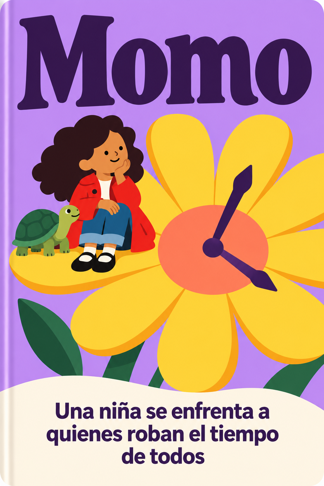
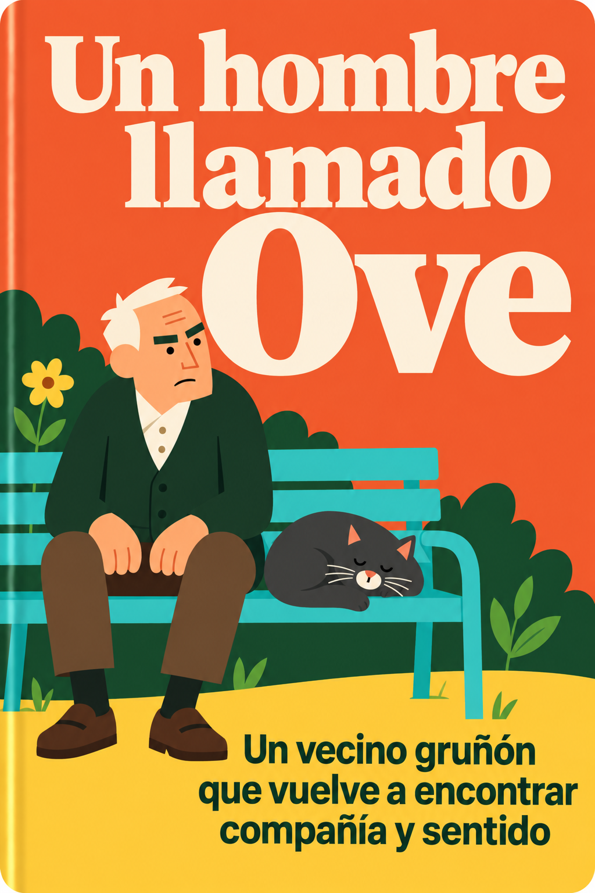
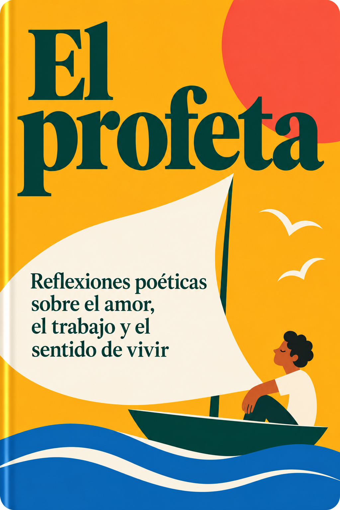

Siete portadas revisadas a partir de tus referencias de Wiser y Headway: rasgos pequeños, pelo en bloques, formas planas y menos volumen. Las primeras versiones siguen guardadas en el historial.


